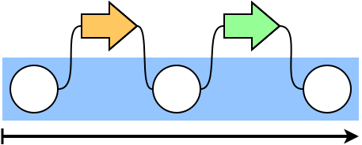
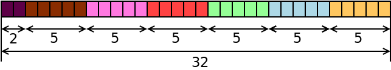
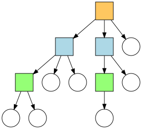
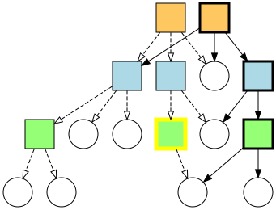
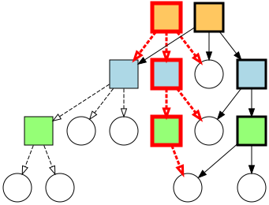
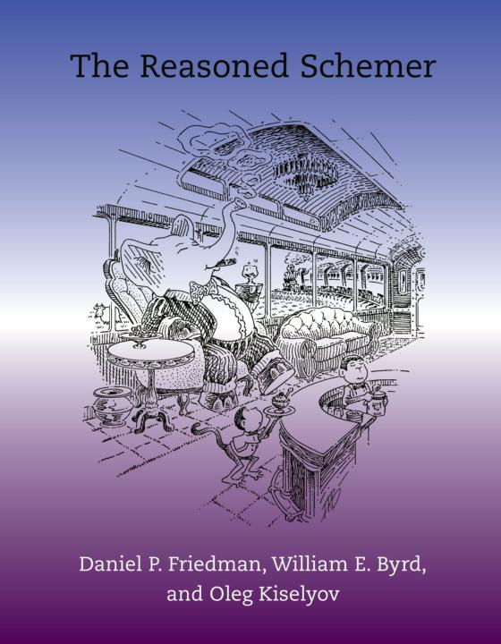

Clojure
lvh
_@lvh.io
Introduction
Who am I?
KUL
Rackspace

Python

More importantly: Clojure!

Who are you?
- Functional programming?
- HOF?
map,filter,reduce?
- HOF?
- Lisps?
- Clojure?
Hello, Clojure!
What’s Clojure?
(apply modern-lisp @jvm)
Homoiconic syntax
(f a b c)
just a different spelling for:
f(a, b, c)
A lisp? Really?
What’s so nice about it?
Lots of reasons:
- Immutability & functional programming
- JVM, but also JS back-ends
- “Just do it already” (my favorite)
- …
Just do it already
(Partial) static typing
- Python: talking about it forever
- Annotation syntax is enough, right?
- Finally going to make it in 3.whatever
- Clojure:
core.typed
Just do it already
Software transactional memory
- Python: 8 working prototypes
- ~2x slowdown from regular Python
- Some of the smartest people on it
- Difficult because Python is hard to optimize
- Clojure: STM since 1.0
Just do it already
Asynchronous programming
- Python: asyncio
- (caveat: I am the original author of async-pep)
- Yay! Yet another event loop framework!
- Clojure: core.async
- Supports both threads & IOC
- Goroutines? Library, not language feature
Just do it already
Logic programming
- Python: bunch of weekend hacks
- Clojure: popular library
Not about Python
Most other languages are the same or worse
Ball of mud
Lisp is a ball of mud
$LANG is a shiny diamond
Big ideas
Immutability by default
- Default types are immutable
- You can alway import
ArrayList - … unfortunately also
Date:-(
Functional programming
“85% functional”
Java interoperability
Decomplection
Complex
- Does many things
- Related to, but ≠ hard!
Simple
- Does one thing
- Related to, but ≠ easy!
The value of values
Values are immutable!
“Can’t cross the same river twice”
(Heraclitus, ~500 BC)
“Single” values
- Java:
BigInt,BigDecimal… - Python:
int,float… - Counterexample:
java.util.Date
We’ve made a terrible mistake!
12 Jan 1991, 18 Mar 2002
How many dates?
- Two!
- In Java?
- Take a
Date, change day, month, year - Same
Date, different date! - Why do we accept this?
- Take a
Maybe I’m overreacting
- Most people agree
Datewas a mistake- Bloch has apologized for it profusely
- Most people agree immutable types are good
- Numerics, strings…
- … but mutability is still the default!
someObject.setWhatever
“Compound” values
E.g. collections
- Java: ArrayList, Hash(Set|Map)
- Python: list, set, map…
- Counterexample: tuple
We have made a terrible mistake!
{3, 5}, {3, 5, 7}
How many sets?
- Two!
- In Java? (and Python, and…)
- Take a
HashSet, add/remove some elements - Same
Set, different set! - Why do we accept this?
- Take a
Why are we here?
Imperative programming has no concept of time
Value, identity, state
Recap
- Things don’t change in place
- The future is a function of the past
- The future does not change the past
- Concurrency makes everything worse
Persistent data structures
- Not about persisting to a database
- Specific way of implementing immutable data structures
- Given
x,(f x), will give you a new data structure
Performance?
- Typically not an issue
- JVM is an impressive piece of engineering
- Modern persistent data structures are quite efficient
- There’s always options:
transient,persistent!- import a faster Java alternative
Performance is often better
- E.g. pointer equality checks
- Example: Om beating React.js
New possibilities
Old versions are cheap!
- Easy-to-implement undo
- Time travel
- Speculative evaluation
How does it actually work?
Bit-partitioned hash tries
Bit partitioning
Hash trie
Path copying
How deep does it go?
| Depth | Nodes |
| 0 | 32 |
| 1 | 1024 |
| 2 | ~32k |
| 3 | ~1M |
| 4 | ~32M |
Garbage-efficient
Transducers
Fairly new feature
(1.7, beta)
Only bad part is the name
- What’s a transducer?
- It’s a reducing function transformer!
- What’s a reducing function?
- It’s a function you’d pass to reduce!
- Gee, thanks!
Monads
Just monoids in the category of endofunctors!
map
(map f coll)
((f x) for all x in coll)
(map inc [1 2 3]) ;; => (2 3 4)
filter
(filter f coll)
(all of the x in coll, if (f x))
(filter even? [1 2 3]) ;; => (2)
reduce
(defn sum [coll] (reduce + coll))
Problem!
We kept implementing map, reduce, etc.
- Collections (the ones we just saw)
- Streams
- Observables
- Channels (core.async)
Big idea
- Extract the essence of map, reduce…
- Specifically, remove collections
- Turn them into process transformations
- Very “functional”
Processes
- Succession of steps
- Each step takes an input
- Example: building a collection
- Generally: seeded left reduce
Example with map
(map f)
- Compare
(map f coll)
Big example
Stole Borrowed from Rich Hickey at Strange Loop
Concurrency
STM
- Software transactional memory
- Transactions (ACI, not D)
- Backed by MVCC
STM example
@Raw
Need a synchronization primitive?
Locks are incredibly hard to use
- Very tricky to reason about
- Deadlock free?
- Livelock free?
- Are you sure?
- Some patterns are easy, but inefficient
- Example: GIL
- Requires extensive error handling
- Yay, orphaned locks
- Worst part: often looks like it’s working
- … even when the program is totally incorrect
Failure modes
Segmentation fault- Data corruption
- Silent data corruption
Comparison
Manual memory management
versus
GC and lifetime analysis
Macrology
Code ≡ data
Many basic “language features” are macros:
defn, and, cond…
(Just like Racket)
Domain specific languages
- Default Lisper behavior
Polymorphism
Protocols
Multimethods
x.m(a, b, c)
Which m?
m depends on type of x
- Single dispatch
- Java, C++, C#…
Python: bit more complicated
Not just type of x, but the value of x.m
- Override
x.mon the instance __getattr(ibute)__hacks
x still picks the m!
“Sending a message”
(Smalltalk parlance)
x ← m(a, b, c)
No interesting differences
- Logic is fixed
- Always up to
x
We can do better!
Multimethods
Routing logic: f(x)
Example
TODO: show examples in icecap
core.logic
The Reasoned Schemer
Conclusion
A modern, pragmatic Lisp
Don’t learn Clojure!
Going back is painful ;-)
Thank you!
Questions?
Suggested rants
Bad type systems
- Scala:
def map[B, That](f: A => B)(implicit bf: CanBuildFrom[Repr, B, That]): That - Go:
interface{}